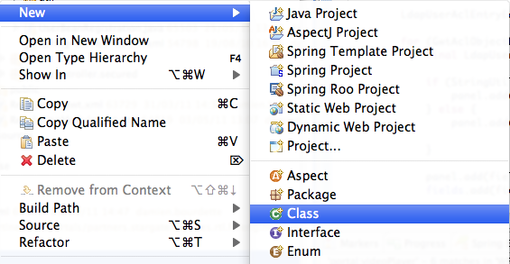

Eclipse
Un IDE est un environnement complet qui permet de travailler plus vite en regroupant de multiples outils de développement dans une même interface.
Eclipse est l'IDE java le plus utilisé au monde. Il est extrêmement populaire car il est très complet, modulaire et gratuit.
Il dispose d'une myriade de plugins et est aussi la base (eclipse rcp) pour des environnements de développement spécialisés.
En téléchargement, il existe plusieurs bundles : eclipse classic + une sélection de plugins.
L'une des 2 versions ci-dessous convient pour les manipulations à venir :
- Eclipse IDE for Java EE Developers est la version la plus complète pour débuter
- SpringSource Tool Suite propose un support pour les produit spring source (spring, groovy...)
Les autres IDEs les plus utilisés sont :
- Netbeans : c'est l'IDE de référence développé par Sun. Il est gratuit et suit très bien les spécifications jee. Ce n'est pourtant pas l'environnement de choix pour les utilisateurs avancés.
- Intellij : Un IDE payant (la version communautaire est gratuite) de très bonne qualité. Contrairement à eclipse qui se nourrit de plugins issus de la communauté, les plugins intellij sont mieux intégrés à l'environnement de base.
Le but de ce tp est de se familiariser avec l'interface d'eclipse.
Workspace
Au démarrage d'éclipse, on peut choisir son workspace.

Le workspace est le répertoire de travail d'eclipse qui contient tous les projets manipulées.
Il est possible d'avoir plusieurs workspaces et de passer de l'un à l'autre mais cela est rarement nécessaire. Les capacités d'organisation au sein d'un workspace étant généralement suffisantes.
Perspectives et vues
Comme n'importe quel IDE, eclipse a sa façon de nommer les différents éléments de son interface.
Cette nomenclature est importante car elle permet de communiquer en utilisant les mêmes termes.
Le workbench est la fenêtre principale. Elle contient les menus, les vues, les éditeurs et des zones d'information.
Les vues et les perspectives sont accessible via le menu Window.

Une vue est une sous partie de spécialisé l'interface : explorateur de projet, editeurs, serveurs, explorateur de repository svn...
Il existe beaucoup de vues au sein d'eclipse.
Les vues sont organisées en panneaux tabulés au sein du workbench
Une perpective est une distribution particulière de vues dans le workbench : java, debug, database explorer,
En changeant de perspective, on passe donc à une organisation adaptée à la tâche en cours.
Les éditeurs occupent généralement la partie centrale du worbench et permettent d'éditer les contenus.
Préférences
Les préférences sont accessibles via le menu Window.
Elles permettent de régler tous les aspects de l'IDE : formattage des sources, environnement java, serveurs...
Le moteur de recherche dans les préférences est très puissant et permet de trouver une option cachée dans un sous panneau d'un sous menu.
Plugins
Les plugins sont un élément fondamental d'éclipse. Eclipse est un conteneur de plugin.
Les bundles viennent avec beaucoup de plugins pré installés et le menu Help > Eclipse MarketPlace permet d'en installer de nouveaux.
Un projet java
Afin de tester quelques fonctionnalités d'eclipse, nous allons créer un projet java.
Un projet java se crée via le menu File > New > Project... et en choisissant le type Java > Java Project.
On entre un nom de projet "test" et on clique sur finish.
Un nouveau projet "test" est donc disponible dans le workspace et un répertoire src contiendra les sources java.
Une classe
En faisant un click droit sur le répertoire, on peut créer une classe java Person dans le package edu.ecm.test
On obtient le code suivant :
package edu.ecm.test;
public class Person {
}
Getters et Setters
On ajoute les attributs suivants dans la classe.
private String firstname; private String lastname;
Eclipse est capable de générer les getters et setters pour ces attributs. Il suffit de faire un click droit dans l'éditeur et d'utiliser le menu Source > Generate Getters and Setters...
public String getFirstname() {
return firstname;
}
public void setFirstname(String firstname) {
this.firstname = firstname;
}
public String getLastname() {
return lastname;
}
public void setLastname(String lastname) {
this.lastname = lastname;
}
toString
La méthode toString() est la méthode qui transforme un Object en chaîne de caractères. Elle sert principalement à faire du débuggage car pour la serialisation il existe des mécaniques bidirectionnelles plus complètes.
Eclipse peut également générer cette méthode via le menu contextuel Source > Generate toString()...
@Override
public String toString() {
return "Person [firstname=" + firstname + ", lastname=" + lastname + "]";
}
equals et hashCode
Les méthodes equals et hashCode servent lorsque les objets sont utilisés dans des collections ou des mécaniques à base de tables de hash.
Le contrat et le lien entre ces méthodes dépasse le cadre d'un simple exercice sur eclipse mais une description détaillée et simple est disponible dans le chapitre 3 de effective java
Avec eclipse, il suffit de demander la génération de ces méthodes via Source > Generate hashCode() and equals()...
@Override
public int hashCode() {
final int prime = 31;
int result = 1;
result = prime * result + ((firstname == null) ? 0 : firstname.hashCode());
result = prime * result + ((lastname == null) ? 0 : lastname.hashCode());
return result;
}
@Override
public boolean equals(Object obj) {
if (this == obj)
return true;
if (obj == null)
return false;
if (getClass() != obj.getClass())
return false;
Person other = (Person) obj;
if (firstname == null) {
if (other.firstname != null)
return false;
} else if (!firstname.equals(other.firstname))
return false;
if (lastname == null) {
if (other.lastname != null)
return false;
} else if (!lastname.equals(other.lastname))
return false;
return true;
}
Les capacités de génération d'eclipse vont bien au delà de ces simples exemples. Nous aurions pu faire tout ce code à la main et parfois cela est nécessaire.
Cependant, java est un language verbeux et chaque fois que cela est possible, il est bon de pouvoir compter sur l'IDE.
main
On va maintenant créer un classe avec une méthode main.
public class Main {
public static final void main(String[] args) {
}
}
C'est la signature de méthode nécessaire afin qu'elle puisse être appelée en ligne de commande.
En pratique, dans des environnements managés coté serveur, cette méthode n'est jamais définie.
Afin de la tester un peu, on ajoute une écriture dans la sortie standard (stdout).
System.out.println("Hello world !");
On peut lancer cette méthode via le menu contextuel de la classe.
On peut utiliser notre class Person depuis le main.
Person person = new Person();
person.setFirstname("alex");
person.setLastname("luthor");
System.out.println(person);
Refactoring
Les IDEs java profite du fort typage du language afin d'offrir de grandes capacités de refactoring.
Imaginons que nous souhaitions renommer la classe Person en People.
Un click droit sur la classe et on accède au menu Refactor > Rename... qui permet de faire le changement de nom.
La classe main a été modifiée en fonction.
People person = new People();
person.setFirstname("alex");
person.setLastname("luthor");
System.out.println(person);
Encore une fois, les capacités d'eclipse dépassent amplement cet exemple simple. Son éditeur de code et ses outils de refactoring sont très puissants.
Navigation
Les capacités de navigation au sein de l'IDE sont nombreuses. Voici quelques façons de trouver ce que l'on cherche :
- control-click sur une référence ou une variable afin d'aller à la définition.
- control-shift-T (Open Type) afin de rechercher une classe via un moteur de recherche.
- click droit sur une classe puis References > Project pour avoir toutes les utilisations de cette classe dans le cadre du projet.
Par exemple, si on tape control-shift-T puis "People", on peut ouvrir rapidement le fichier contenant la classe sans utiliser la souris.
Plus de raccourçis
Les raccourçis clavier sont indispensables afin d'être plus productif. En voici quelques uns :
- Ctrl+Space : invoquer l'assistant de complétion
- Ctrl+W ou Ctrl+F4 : fermer l'éditeur courant
- Close All : fermer toutes les éditeurs
- Ctrl+N : assistant de création
- Ctrl+Shift+S : tout sauver
- Ctrl+L : aller à la ligne
- Alt+Left : fichier précédent de l'historique
- Alt+Right : fichier précédent de l'historique
- Ctrl+Shift+T : ouvrir la classe
- Ctrl+Alt+H : voir tous les appels sur une méthode
- F4 : voir la hiérarchie d'héritage d'une classe
- Ctrl+Shift+F : formatter le code
Il est facile de trouver des listes de raccourçis sur le web. Par exemple, en suivant ce lien